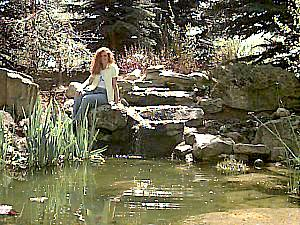

Horticulture Research Gardens  |
Located right on campus, the gardens are a very popular place for students like Sherlyn to take a break form busy schedules. Each year, horticulture students design and build a new area. The gardens include many flower beds, vegetable gardens and orchards. If you schedule your visit to Ricks during the warmer months, this is a must see. |